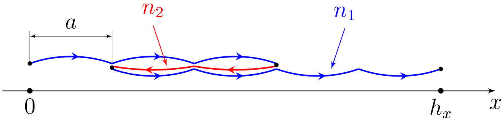
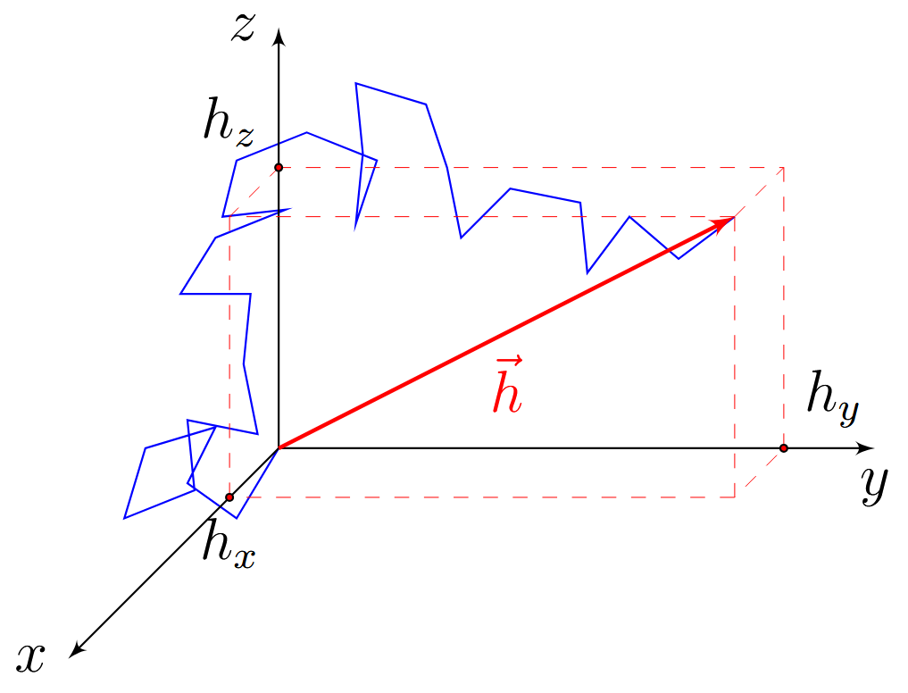
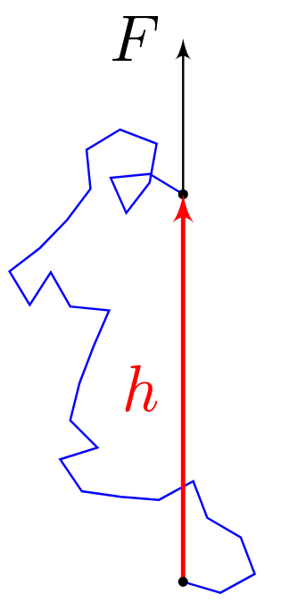
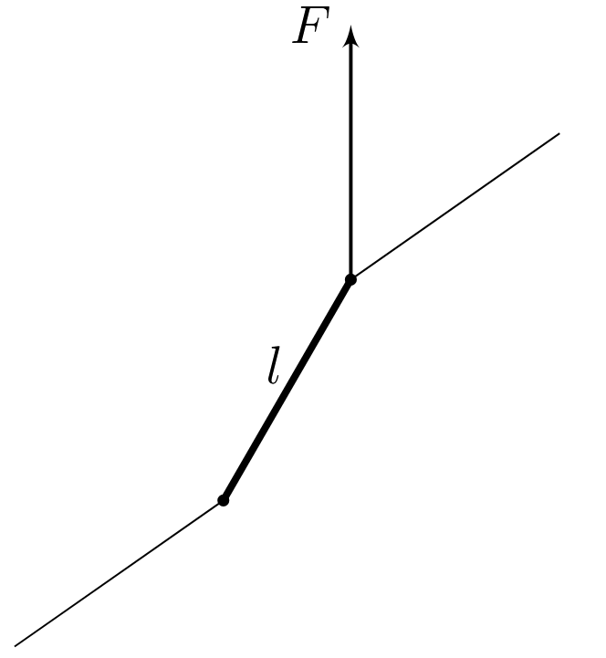
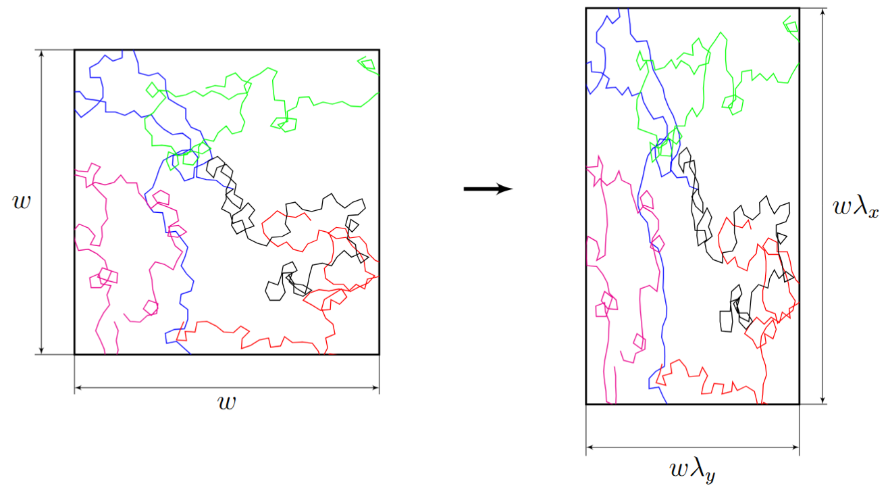

Y26 (2026) — English translation
Rubber is a polymer material with the unique ability to stretch elastically without destroying its structure. During the process of stretching, the deformation of the material does not occur according to the principle of increasing interatomic distances, as in most solids, but due to the reorientation of the long molecular chains of which it consists. It is this molecular structure and deformation mechanism that gives rubber its characteristic elastic properties. The polymer molecules in rubber are long chains of atoms rolled into balls. In Part A of this problem you are invited to get acquainted with a one-dimensional model of such a chain. Part B is devoted to describing the three-dimensional chain, and Part C is devoted to describing the entire rubber sample, consisting of many polymer molecules. In Part D you will obtain an expression for the internal energy of elastic bodies, and in Part E you will analyze the unusual thermal effect that occurs during adiabatic stretching of rubber. All parts of the problem are independent. In the problem you may need the following constants: $k = 1.38\cdot10^{-23}~\text{Дж}/\text{К}$ – Boltzmann constant; $N_A = 6.02\cdot 10^{23}~\text{моль}^{-1}$ – Avogadro’s number.
Rubber is a polymer material with the unique ability to stretch elastically without destroying its structure. During the process of stretching, the deformation of the material does not occur according to the principle of increasing interatomic distances, as in most solids, but due to the reorientation of the long molecular chains of which it consists. It is this molecular structure and deformation mechanism that gives rubber its characteristic elastic properties.
The polymer molecules in rubber are long chains of atoms rolled into balls. In Part A of this problem you are invited to get acquainted with a one-dimensional model of such a chain. Part B is devoted to describing the three-dimensional chain, and Part C is devoted to describing the entire rubber sample, consisting of many polymer molecules. In Part D you will obtain an expression for the internal energy of elastic bodies, and in Part E you will analyze the unusual thermal effect that occurs during adiabatic stretching of rubber. All parts of the problem are independent.
In the problem you may need the following constants:

In this part, we consider a model of a molecule consisting of $n \gg 1$ identical units of length $a$ located along some axis $x$. Each link can be oriented either along the axis or against it, both directions are equally probable. One end of the molecule is fixed at the origin, the coordinate of the second end is $h_x$. In all paragraphs of this part, $h_x$ is considered to take one of the valid multiples of $a$. The state of a molecule with a given $h_x$ can be realized in a large number of ways, unfolding various units. The number of links oriented in the positive direction will be denoted by $n_1$, and in the negative direction - $n_2 = n - n_1$. Entropy is defined as $S = k \ln \Gamma$, where $\Gamma$ is the number of microscopic states corresponding to a given macroscopic one.
Math facts: If you want to select a $n_1$ object from $n$ objects, you can do so \[ C_n^{n_1} = \frac{n!}{n_1! (n-n_1)!}\] ways. For $x \ll n$ up to terms of order $x^2$ in the exponent $$ \frac{n!}{(n/2 - x)! (n/2 + x)!} \approx 2^n \sqrt{\frac{2}{\pi n}} \exp\left(- \frac{2 x^2}{n} \right). $$
Math facts:
Note: When one link is rotated, $h_x$ changes to $2a$.
Now let's move on to the three-dimensional case. The chain consists of $n \gg 1$ segments of length $l$, oriented independently of each other and with equal probability in all directions. Let $\vec{h}=(h_x,h_y,h_z)$ be a vector drawn from the beginning of the molecule to its end. Let $\vec{l}_i$ be a vector directed from the beginning of the $i$-th link to its end. Then from the independence of the directions of various links it follows that for $i \neq j$ the average scalar product of these vectors is equal to zero: $\langle \vec{l}_i \vec{l}_j \rangle = 0$.

Note: if you were unable to complete this step, you can then count $\langle h_x^2\rangle = nl^2$ throughout the entire task.
It can be shown that the probability density distribution of the coordinates of the end of the molecule is also Gaussian $f(\vec{h}) = A \exp(- \beta \vec{h}{}^2)$, where the coefficient $\beta$ can be determined from the condition that $f(\vec{h})$ reproduces the correct value $\langle h^2 \rangle$. Recall that the probability that the projections of the vector $\vec{h}$ lie in the intervals $[h_x, h_x+dh_x]$, $[h_y, h_y+dh_y]$, $[h_z,h_z+dh_z]$ is equal to $f(\vec{h})\, dh_x\,dh_y\,dh_z$.
Let the force $F$ act on one end of the molecule, as shown in the figure on the left. Then the potential energy of each link will depend on its direction, and at this end of the molecule there will be an average displacement in the direction of the force. For each of the links, the distribution in directions can be found by considering that one of its ends is fixed, and the other is acted upon by a force $F$, constant in magnitude and direction (see the figure on the right). Then the behavior of the link is described by the Boltzmann distribution with potential energy corresponding to such a force. The distributions of different links are still independent.


The intertwining chains in the rubber composition are connected to each other by randomly formed chemical bonds - “cross-links”, usually formed by sulfur atoms. Thus, rubber is an almost homogeneous polymer network.
In this part of the problem we will use the following assumptions: the entropy of the mesh $S$ is equal to the sum of the entropies of individual chains; the mesh is incompressible, i.e. its volume is constant; the mesh chains are deformed like the entire sample; individual molecules are described by the model from Part B.
In this part of the problem we will use the following assumptions:
Let us consider the stretching of the sample along three axes with stretching coefficients $\lambda_x,~\lambda_y$ and $\lambda_z$. From the third assumption it follows that if before deformation the relative position of the end of the molecule was described by the vector $\vec{h} = (h_x,h_y,h_z)$, then after deformation the position of the end is given by the vector $\vec{h'} = (\lambda_x h_x,\lambda_y h_y,\lambda_z h_z).$ It can be shown that in the three-dimensional case the entropy of one molecule from part B is described by a formula similar to A1: \[ S_1(\vec{h}) = S_0 - \dfrac{3k}{2nl^2}(h_x^2 + h_y^2 + h_z^2). \] It turns out that the entropy of one chain in the stretched state $S_1'$ can be calculated using this formula if we substitute the distance between the ends of the molecule in the stretched state into it: $S_1' = S_1(\vec{h'})$. To calculate the entropy of the entire mesh, you can multiply the total number of chains in the $N$ mesh by the average entropy value of one chain.
It can be shown that in the three-dimensional case, the entropy of one molecule from part B is described by a formula similar to A1: \[ S_1(\vec{h}) = S_0 - \dfrac{3k}{2nl^2}(h_x^2 + h_y^2 + h_z^2). \] It turns out that the entropy of one chain in the stretched state $S_1'$ can be calculated using this formula if we substitute the distance between the ends of the molecule in the stretched state into it: $S_1' = S_1(\vec{h'})$. To calculate the entropy of the entire mesh, you can multiply the total number of chains in the $N$ mesh by the average entropy value of one chain.

Note: if you couldn't make B1, then use $\langle h_x^2\rangle = nl^2$.
It turns out that for rubber the internal energy depends only on temperature and does not depend on the deformation of the sample.
First, let's find a general expression for the internal energy of solids. Unlike an ideal gas, the internal energy of solids can depend not only on temperature, but also on their deformation. Let us consider a rod of volume $V$ with Young's modulus $E(T)$, stretched along the axis to a relative elongation $\varepsilon$ at a temperature $T$. Then the internal energy of the rod can be represented as the sum of two terms: \[ U = U_\text{fur} + U_\text{term}. \]Here $U_\text{мех} = U_\text{мех}(\varepsilon,T)$ is the energy of elastic deformation, such that at $\varepsilon = 0$ $U_{\text{мех}} = 0 $ is satisfied, $U_\text{терм} = U_\text{терм}(T)$ is the internal energy component not associated with deformation, depending only on temperature.
To find $U_\text{мех}$ you can use the cycle method. Let us consider the following Carnot cycle, the working fluid of which is the rod in question. Isothermal expansion at temperature $T$ from zero strain to strain $\varepsilon \ll 1$. Adiabatic temperature increase to $T + dT$, where $dT \ll T$. The change in deformation in this process can be neglected. Isothermal compression to a small strain such that it can be considered $\varepsilon \approx 0$. Adiabatic temperature decrease to $T$. In the approximation under consideration, the work in the cycle is equal to the difference in the work on the isotherms.
In the approximation under consideration, the work in the cycle is equal to the difference in the work on the isotherms.
For rubber, the internal energy is practically independent of stretching: \[ U \approx U_\text{term} = U(T). \]This is called the “ideal rubber” model.
In general, to describe the behavior of rubber, it is necessary to take into account its thermal expansion. The relationship between force $F$, temperature $T$ and sample elongation $\lambda = l/l_0$ in one of the models can be described by the empirical formula: \[ F = \dfrac{E_0 S_0 T}{3T_0}\left(\lambda - \dfrac{1+3\alpha (T-T_0)}{\lambda^2}\right). \] Here $\alpha = 2.3\cdot10^{-4}~\text{К}^{-1}$ is the linear coefficient of thermal expansion of rubber, $S_0 = 1~\text{см}^2$ is the cross-sectional area of the undeformed sample, $E_0 = 1~\text{МПа}$ is Young’s modulus at temperature $T_0 = 300~\text{К}$. This dependence allows us to explain interesting thermal effects. Let the rubber sample be quickly stretched so that heat transfer can be neglected, but the process can still be considered reversible. It can be shown that in this case the change in sample temperature can be expressed through the partial derivative of the force with respect to temperature at a constant length: \[ \Delta T \approx \dfrac{T_0}{C_l}\int\limits_{l_0}^l \left(\dfrac{\partial F}{\partial T}\right)_l dl. \]
Source: https://pho.rs/p/5047